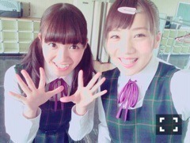
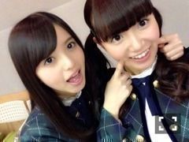

| 2015/07 08 Wed | ひめたん-0o0-その553 |

日曜の夜はらじらー！サンデー
前回のゲストは
声優アーツのコーナーに早見沙織さん
乃木坂46から衛藤美彩ちゃんでした！
美彩先輩とせくしーで戦うなんて
最初から負け試合ですって( ´ ･ω･ ` )
いや～完敗でした～狩れなかった～
これからちょっとずつね
美彩先輩から学ぼうと思います
リベンジマッチはちょっと時間ください。笑
いや、必ずしましょう！
また来てね美彩先輩♡
ひとりノリひめたん第2弾⊂( ˆωˆ )⊃
どうだ！相変わらず
安定のクオリティでしたけれども
なんであのコーナー帰ってきたんだろう
あたふたしてるひめたん見るの、いや聞くの
楽しい？ねー楽しいの？
最後のSEに助けられたりとかして
一昨日のはちょっと楽しかったけど
でも定番化しませんように。
あ、これほんとフリじゃないです。
カープ女子ブログはそのうちあげまーす♡
乃木坂のゲストを
先にメールで言っちゃった件
本当にごめんなさい( ´ ･ω･ ` )
らじらーのスタッフさん寛大なので
笑って許してくれましたが
今後二度とないようにします( ´ ･ω･ ` )
いやあ懐の深い番組ですよ。
なんでもアリなんだもん。素敵。
そして口止めメール受け取った人が
日記のコメントにお返事くれたはいいけど
よそよそしくて本当に参ったよ！
ご丁寧に！どうもありがとね！！この！！
そうそう、オンエアの中で言った通り
とある密着が入っておりました
告知できるようになったら
お知らせしますね（＾ω＾）
インタビューなんかもあるよ
ここだけの話ですが
他にもいろんなメンバーが載るみたい。
まっちゅん♡
昨日の夜ふたりで発狂した♡♡
舞台が終わってひと段落。
撮影に、収録に、バタバタと
充実した毎日を過ごしております
もう7月なんだね( °ω° )
下半期( °ω° )
昨日は撮影をして、
帰りに美彩先輩と万理華と3人で
ごはん行ってお話したよ
美彩先輩とはたまたま3日連続で
お仕事一緒だった～♪
美彩・万理華・日芽香の3ショットで
ごはん行くこと多い気がする
先月も行ったばっか( °ω° )♡
のぎ天がなんと
最終回を迎えることになりました。
初回放送から一年、
この番組でいろんなことを
経験させていただいたなあと
振り返ってみて思います（＾ω＾）
のぎ天のことについては
またどこかでゆっくり
お話させてください。
そして、入れ替わりではないんですが
楽天SHOWTIMEで7月から
新番組が始まります！
その名は「乃木坂ゴルフ倶楽部」！
乃木坂のメンバーが
毎回ゴルフ好きなゲストの方をお招きして
一緒にコースを回りながら
ゴルフの魅力をお伝えしていく番組です。
アイドルのことよくわからない人でも
これをきっかけに乃木坂のことを
知ってくれたら嬉しいし、
逆にゴルフやったことない人でも
興味を持ってはじめてくれたりしたら
いいなって思っています(´,,•ω•,,｀)
月2回配信予定で
初回は7/24、ゲストはTIMさんです！
ぜひチェックしてください！

ペアPV予告編が公開されました
今回は愛未ちゃんと♡
9thシングルの個人PVで
お世話になった山本篤彦監督です！
イカと貝だけの海鮮丼！
愛未ちゃんと私は
何かとシンメになることが多い二人。
コウモリよ、やさしさとは、
乃木團のツインボーカル、などなど
ふたりで歌うことが多いような。
予告編だけでは伝わりませんが
最後は歌もうたいます～♪

 ひめたんも扇風機とか冷房弱い人？
ひめたんも扇風機とか冷房弱い人？
てか暑いときどうしてる？
冷房苦手( >_< )でもつけないと暑いので
30℃を付けたり切ったりしてる～
羽織るもの・膝に掛けるものを持っておいて
調節するようにしてます！
始球式に出たいですか？
出たいです！
投球に自信はないけど出たい！
ひめたんは感情が顔に出やすいですか？
出さないようにしてるつもりだけど
顔やら態度やらいろんなところに
出てるらしいです( ´ ･ω･ ` )
短冊に願い事って
今までにしたことありますか？
幼稚園？小学校？の頃かな。
今年の七夕はそういえば雨だったけれど
織姫さんと彦星さんは会えたんだろうか。
夏アニメがスタートする季節(・∀・)
私は春の番組がいくつか完結してないけれど
でも新しいのもチェックしなきゃで
録画リストが大変なことに。
今期は何観たらいーい？

明日は11thシングル特典イベント
サイン会がありまーす！
行くよーって人はよろしくね♡
(＊´・ω・＊)
コメント(890)
2015/07/08 23:30